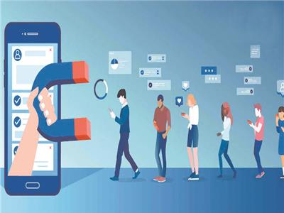
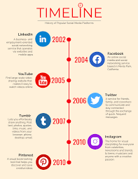

ما هي وسائل التواصل الاجتماعي؟
وسائل التواصل الاجتماعي هي منصات افتراضية تتيح التواصل والتفاعل بين الناس في المجتمعات المختلفة والأماكن المختلفة والتي تتيح مشاركة الثقافات والآراء وهناك العديد من المنصات التي يمكن أن تتيح هذا التواصل ومنهم فيسبوك (Facebook) وإكس "تويتر" (X ”Twitter”) وإنستغرام (Instagram) وتيك توك (TikTok) وكل منصة من هذه المنصات يمكن أن توفر بعض الخدمات التي يمكن أن تكون إضافية عن المنصات الأخرى والذي يتيح التنوع في التواصل وتشارك الآراء والأفكار.
تأثير وسائل التواصل الاجتماعي على الإنسان:
إن وسائل التواصل الاجتماعي يمكن أن تؤثر سلبيًا وإيجابيا على الشباب فإيجابيات هذه الوسائل هي أنها يمكن أن تخلق العلاقات وتجعل الشخص أكثر وعيًا بما يحدث من حوله وبما يحدث مع من يعرف ومن لا يعرف. أما سلبيات هذه الوسائل هي أنها يمكن أن تشتت الشباب عن أنشتطهم وتجعل أفكارهم تتغير وأسلوبهم يتغير وأيضًا وهناك بعض الشائعات التي يمكن أن تتكون داخل الشباب والتي يمكن أن تجعلهم يقوموا بأفعال هم ليسوا معتادين لها ولكن متأثرين بها بسبب وجودها على وسائل التواصل الاجتماعي.
خوارزميات وسائل التواصل الاجتماعي:
هي عبارة عن اليات وقواعد تتحكم بما تراه من محتوى على وسائل التواصل الاجتماعي بهدف زيادة وقتك على المنصة، وتلك الاليات تستخدم المحتوى الذي شاهدته سابقا، وما تفاعلت عليه. والبيانات التي تجمعها الخوارزميات مقسمة عدة انواع: اولا، السلوكية وهي تراقب وتسجل ما تفعله على المنصة مثل دخولك لبرنامج تسوق للبحث عن ثلاجة او جهاز الكتروني. ثانيا، البيانات الديموغرافية وهي عبارة عن موقعك الجغرافي، عمرك، سنك، وجنسك والتي تجمع من خلال بروتكول الانترنت (IP Address) وتلك المعلومات تستخدم لجعل محتوى محدد يظهر لفئة محددة. ثالثا، البيانات النفسية والسلوكية الدقيقة وهنا الخوارزميات باستخدام ما تشاهده وتتفاعل مه تحاول فهم شخصيتك وحالتك المزاجية والنفسية بشكل عام. ولعملية التتبع من خلال الخوارزميات دورة بسيطة، فهي تبدا بفتح المستخدم للمنصة، ثم تتبع لما يقوم به المستخدم داخل المنصة، ثم يتم تحليل ما المعلومات المجمعة بادوات مثل (google analysis)، ثم يصنف المستخدم ضمن الفئات المستهدفة.
كيفية استدراج السوشيال ميديا للإنسان؟
وسائل التواصل الاجتماعي تستدرج الانسان من خلال 4 اشياء وهم، اولا، هرمون الدوبامين وهو احد الهرمونات الذي يفرزها الجسم والذي يشعر الانسان بالسعادة وهو جزء من نظام المكافئة الذي يقوم به الجسم. لذا فوسائل التواصل الاجتماعي تعتمد على العنصر المفاجئة فالفرد لا يعلم متى سياتي اشعار او متى ستحصل على تفاعل لذا فعندما يحدث ذلك يفرز الجسم الدوبامين وبسبب وظيفته انه يشعرك بالسعادة والراحة فالشخص يقضي وقتا اكثر على وسائل التواصل من اجل الشعور بهذا الكم من السعادة والراحة. ثانيا، من خلال الخوارزميات وهي عبارة عن اليات وقواعد تتحكم بما تراه من محتوى على وسائل التواصل الاجتماعي وتعرض لك محتوى مشابه له بهدف زيادة وقتك على المنصة، وتلك الاليات تستخدم المحتوى الذي شاهدته سابقا، وما تفاعلت عليه لعرض محتوى جديد يبقيك على المنصة لفترة اطول. ثالثا، طريقة بناء المنصة فالمنصات غالبا تكون بها خاصة التشغيل التلقائي او التمرير والتصفح اللا نهائي او كلاهما مثل منصات يوتيوب وتيك توك وغيرها والذي يعرض محتوى بمساعدة الخوارزميات ليبقي الشخص على المنصة بدون اعطائه وقت للتفكير في المحتوى او اذا اراد ان يكمل مشاهدة ام لا. رابعا، الاستغلال النفسي والاجتماعي، والذي يشمل التلاعب النفسي مثل، ايحاء بانك ستفتقد شىء مهم او شىء سيتحدث عنه الجميع اذا لم تشاهد وتتصفح بشكل مستمر او اذا غادرت. اما الاستغلال الاجتماعي فهو عبارة عن جعل التفاعل مثل عدد المعجبين والمتابعين جزء من مدى قبول واحترام الناس لك ومقياس لقيمتك الذاتية.
كيفية الحد من استعمال وسائل التواصل الاجتماعي وصد تأثيرات وعوامل جذبها؟
نصح العلماء بالعديد من الخطوات العملية المتتابعة للتقليل من استخدام وسائل التواصل الاجتماعي وتقليص تأثيراتها. أولاً، تحديد وقت يومي مخصص لاستخدام وسائل التواصل الاجتماعي، ووقت الجلوس على وسائل التواصل. مثلاً الجلوس يومياً على وسائل التواصل الاجتماعي بعد الظهر لمدة 30 دقيقة، مع ضبط منبه او إشعار لإغلاق الهاتف بعد انتهاء الوقت. ثانياً، تعطيل الاشعارات الخاصة بوسائل التواصل الاجتماعي، مما يقلل من الجرس والصوت الخاص لاشعارات وسائل التواصل الاجتماعي والتي تدفع الشخص لفحص ما وصله على هاتفه في وسائل التواصل الاجتماعي. وبدون جرس الاشعارات يصبح استخدام الشخص لوسائل التواصل الاجتماعي أقل. ثالث الخطوات هي استبدال الوقت المحدد للجلوس على السوشيال ميديا تدريجياً بأنشطة مفيدة أخرى، على سبيل المثال أخذ 5 دقائق من 30 دقيقة خاصة بوسائل التواصل الاجتماعي، ثم بعد فترة أخذ 10 دقائق لأداء نشاط بدلاً من 5 دقائق سابقاً، إلى أن تتوقف عن استخدام وسائل التواصل الاجتماعي. رابع خطوة تسمى بالوعي الذهني، وهو أن يكون الشخص واعي ومدرك بشكل كامل ما الذي يحفزه دائماً للدخول على وسائل التواصل الاجتماعي، والبعد عن تلك المحفزات وكسرها. وآخر الخطوات هي فهم الشخص ان الهدف الرئيسي ليس حظر الاستخدام بشكل الكامل والبعد عن العالم وأخباره بل تقليص وقت الاستخدام، ولكن الخطوات السابقة ستساعد الشخص ان نفذها لمدة طويلة وكبيرة دون توقف في التحكم الكامل على نفسه وعدم الانجذاب والانخراط الزائد في تلك الوسائل، فيمكنه فيما بعد أن يستخدم وسائل التواصل الاجتماعي وهو متحكم بشكل كامل في وقته وفي تأثيرات تلك المواقع على نفسه من الداخل. وقد أثبتت عدة أبحاث أن التقليل إجراء ممتاز وأفضل من الحظر الكامل، فالتقليل من الوقت يساعد في الحصول على مميزات وسائل التواصل الاجتماعي، وتنمية الذات، وتقليص آثارها السلبية.
تاريخ تطور وسائل التواصل الاجتماعي:
مع ظهور الإنترنت والذي كان وسيلة للتواصل مع الأشخاص الآخرين من كل أنحاء العالم بطرق مختلفة كما يحدث الآن ولكن بشكل أقدم كانت أول منصة تمثل وسيلة التواصل الاجتماعي الأولى هي منصة Six degrees والتي ظهرت سنة 1997 وكانت بها يعتبر جميع أساسيات وسائل التواصل الاجتماعي الآن ولكنها أغلقت عام 2001 لأن لم يكن هناك الكثير من الناس يستعملون الإنترنت فكان 2% فقط من الناس على كوكب الأرض حينها يستعمل الإنترنت فأغلقت الشركة. وفي 2002 أنشئت منصة Friendster والتي كانت من أكثر المنصات شهره حتى وصل مستخدميها إلى 1,000,000 مستخدم. بعدها أنشأ مارك زوكربيرغ فيسبوك والذي كان مشروع تخرج في جامعته لكن بعد ذلك أصبح فيسبوك منصة للمدارس والجامعات وفي 2005 أصبح فيسبوك به معظم جامعات أمريكا وبعدها أصبح فيسبوك مفتوح وتخطى كل منصات التواصل وقتها. بعدها أُنشئ تويتر والذي كان مكون من tweets والتي كانت معلومات أو منشورات. وبعدها تضاعفت أرباح فيسبوك بشكل كبير فمن 7 مليون دولار أرباح في 2013 أصبحت أرباحها في 2017 40 مليون. وفي 2022 قام أيلون ماسك بشراء تويتر وقام بتسميته إكس X.
سلبيات وإيجابيات وسائل التواصل الاجتماعي:
الايجابيات:
من ناحية الإيجابيات، تعزز وسائل التواصل الاجتماعي الاتصالات والتواصل بين الأفراد بغض النظر عن بعد المسافات، وفي هذا التطور أصبح الانسان قادر على رؤية شخص يعرفه وان كانوا في مسافات مهولة وبعيدة عن بعضها والتكلم معه. وثانياً تمكن وسائل التواصل الاجتماعي من التعبير عن الذات والمشاركة في مجتمعات ذات اهتمام مشترك، مما يوفر دعم نفسي واجتماعي وبالتحديد لمن يشعر بالوحدة. ثالث الايجابيات، هي توفير فرص عمل للشباب وفرص اقتصادية وريادة أعمال، على سبيل المثال التسويق الالكتروني والعمل الحر. وذلك حيث سمحت المنصات الرقمية لرواد الأعمال والأفراد بتسويق منجاتهم بخيارات منخفضة التكلفة والوصول لجمهور كبير من الأشخاص. كما نمت وظائف جديدة من عدة سنوات وهي صناعة المحتوى، تسويق الكتروني، ادارة الصفحات على وسائل التواصل الاجتماعي. ورابعاً، تساعد وسائل التواصل الاجتماعي في دعم التعلم الذاتي والتفاعل الاكاديمي، حيث تستخدم في بعض الاحيان منصات كاليوتيوب، فيسبوك، وقنوات تليجرام، وصفحات انستجرام في نشر دروس ومحاضرات ومواد تعليمية وتسهيل النقاش بين طلاب ومعلمين، مما يحسن ويطور من فرص التعلم. واخر الايجابيات هي نشر الوعي والاخبار بين الناس في أسرع وقت، حيث أصبح العالم كقرية صغيرة يمكن لكل شخص نشر أي شيء وأي خبر بين مجتمعات ودول بطريقة سريعة وبسيطة وسهلة.
السلبيات:
على الجانب الآخر، تظهر العديد من السلبيات التي يجب أن تؤخذ بعين الاعتبار والانتباه لها أثناء استخدام وسائل التواصل الاجتماعي. من أبرز تلك العيوب خطر الإدمان على الاستخدام، حيث أن ميزة التصفح اللانهائي بدون حدود في تلك المواقع، والتنبيهات الصوتية المستمرة تجعل المستخدمين يقضون وقتاً طويلاً على وسائل التواصل الاجتماعي، مما يؤثر على انتاجية الأشخاص للمجتمع وتركيز الأفراد. ويؤدي ادمان الانترنت ووسائل التواصل الاجتماعي للعديد من المخاطر الأخرى على الشخص، صحته بشكل عام ونفسيته، وشخصيته وتعاملاته وعلاقته وجميع تفاصيل حياته وعمله كعواقب للإدمان. من سلبيات وسائل التواصل الاجتماعي أيضاً انتشار شائعات ومعلومات غير حقيقية ومزيفة، حيث يمكن ان تنتشر بسرعة بين مجتمعات كبيرة عبر تلك الشبكات دون تدقيق وتحقق من المعلومات المنتشرة. بعض تلك الشائعات قد تثير الجدل، ومنهم ما ينشر الخوف والرعب في الناس. تؤثر وسائل التواصل الاجتماعي على الصحة النفسية بالسلب، حيث يشير بعض الباحثين إلى ارتباط الاستخدام المكثف بزيادة مستويات القلق والاكتئاب، وبالتحديد لدى الشباب الذين يقارنون حياتهم بحياة الآخرين المعروضة على صفح وسائل التواصل الاجتماعي. كما ظهر حديثاً العديد من المشاكل والجرائم الناتجة عن منصات التواصل الاجتماعي، منها التنمر الالكتروني، والتجسس، والاحتيال الالكتروني.

كيفية الاستفادة من الوقت الضائع على وسائل التواصل الاجتماعي؟
في عصر تتسارع فيه وسائل التواصل الاجتماعي وتنهش وقتنا دون أن نشعر، أصبح من الضروري تحويل الوقت الضائع على تلك المنصات إلى وقت مفيد ومنتج، ولفعل ذلك توجد العديد من الخطوات والحلول التي يجب اتباعها.

| الهدف/النوع | امثلة |
|---|---|
| التواصل | فيسبوك، اكس (تويتر سابقا)، ثريدز، ريديت |
| فيديوهات | يوتيوب، تيك توك، وانستاجرام |
| دردشة | واتس اب، ماسنجر، فايبر، وديسكورد |
| الصور والمحتوي البصري | سناب شات وبنترست |
| البث الحي او البث المباشر | تويتش، ويوتيوب، kick |
| المحتوى المرئي الطويل | يوتيوب، هولو، ديزني بلس، شاهد، واتش ات |
| تعليم ودراسة | دوولينجو، كيك، edx، coursera، khan academy |
| محتوي صوتي | سبوتيفاي، ابل بودكاست، يوتيوب ميوزك، ساوند كلاود |
| محتوي مهني | لينكد ان، Git-hub |
| اخبار | منصات الواقع الاخبارـ جوجل نيوز، فليب بورد، و medium |
| التسوق | امازون، نون، ebay، temu |
| الخدمات | تطبيقات البنوك، تطبيقات الدفع، تطبيقات الحجز، والتطبيقات الحكومية |
إدمان وسائل التواصل الاجتماعي (تعريف، أسباب، ونتائج وتأثيرات):
ادمان السوشيا ميديا هو عبارة عن الاستخدام القهري والمفرط لوسائل التواصل الاجتماعي كاليوتيوب، وتيك توك..وغيرها من المنصات. وادمان وسائل التواصل الاجتماعي له عدة انواع: اولا، ادمان مشاهدة الفيديوهات والصور، وهذا النوع هو عبارة عن ان الشخص يشاهد منصات تعرض فيديوهات او صور بشكل مستمر مثل يوتيوب، تيك توك، بنترست وغيرها من المنصات. ثانيا، ادمان الهاتف، وهو استخدام الجهاز بشكل مبالغ فيه للقيام بمختلف الاشياء كقراءة الاشعارات وما شبه. ثالثا، ادمان العاب الفيديو، وهنا الشخص يلعب العاب الفيديو بشكل مكثف على مدار اليوم بالساعات الطويلة. رابعا، ادمان المعلومات وهو عبارة عن ادمان مشاهدة وقراءة المحتوى الذي يحتوي على معلومات او اخبار او حتى دردشة وغيرها مثل امازون، شخصيات الذكاء الاصطناعي، فيسبوك..وغيرها. و يكون الشخص مدمنا للوسائل التواصل الاجتماعي؟ والمظاهر الواضحة لادمان الوسائل التواصل تشمل، اولا، تاجيل او عدم القيام بالمهام لمشاهدة وسائل التواصل الاجتماعي.
ثانيا، الجلوس لساعات وفترات زمنية كبيرة والجلوس بعد منتصف الليل لمشاهدة وسائل السوشيال ميديا. ثالثا، تقليد بعض الافعال بشكل اعمى لما يراه الشخص على تلك الوسائل والمنصات. واخيرا، الشعور بمشاعر سلبية عندما يتوقف الشخص عن استخدام السوشيال ميديا حتى ولو فترة قصيرة. وايضا، امر مهم علينا مناقشته هو اسباب ادمان وسائل التواصل، فالفرد يدمن وسائل التواصل كتعويض عن الشعور بالوحدة والانعزال او عدم الحب والتقدير والقبول، او كاهدار للوقت الغير مستخدم الذي لا يديره او ينظمه احد، او بسبب افراز الجسم لهرمون الدوبامين الذي يشعر الانسان بالسعادة والذي ينتجه الجسم بسبب الاشعارات والتفاعلات وغيرها. اذا بعد التعرف على كل هذا ما سلبيات ادمان وسائل التواصل؟ فسلبيات وسائل التواصل عديدة ومقسمة الى مختلف الانواع، اولا نفسيا، فالفرد عندما يدمن السوشيال ميديا يصبح اكثر عرضة للاكتئاب، ويصبح الشعور فالفارغ وقلق شىء مستمر، وكذلك يتشتت الشخص ذهنيا ويقل تركيزه. ثانيا اجتماعيا، فعندما يدمن الشخص وسائل التواصل يصبح اكثر انعزالا ويفضل ان يبقي بمفرده مما سيقلل من التواصل الاسري او التواصل مع الاخرين والمجتمع بشكل عام والذي سيؤدي بالنهاية لامراض نفسية مثل الاكتئاب والتوحد ويخلق فجوة فكرية وعاطفية بين الاجيال وبعضها. ثالثا، مهنيا او دراسيا، فبسبب الادمان والتشتت ستقل انتاجية الفرد ومدى تركيزه، وكذلك سيفتقد الفرصة لتنمية ذاته ومهاراته من خلال استغلال الوقت بدلا من الافراط فيه. واخيرا، دينيا، فادمان وسائل التواصل الاجتماعي تؤثر على الشخص دينيا فهي تضيع وقته الذي قد يستغله بالعبادة وما شبه، وكذلك بسبب كثرة التعرض قد يقلد الفرد افعال او يقول اقوال غير لائقة للدين او تتوافق معه.
TikTok
Instagram
Facebook
YouTube
presslikeonyourmind@gmail.com
+20 1129473308
Also you can see our future content on those pages.
In addition if you want to contact us either through Gmail or Whatsapp feel free to do it.